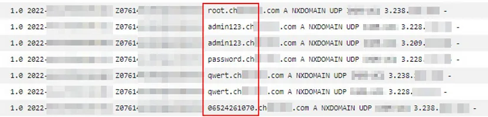
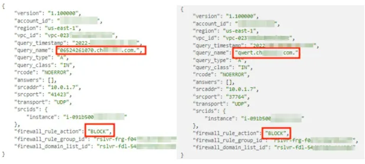

AWS DNS Firewall
How to prevent data exfiltration via DNS tunneling.
AWS makes several features and services available so that the customer can effectively construct layered security in their environment. However, a few years ago, it was not possible to control DNS queries originating from the VPC natively, so the customer needed to plan the security of their network architecture with third-party solutions in order to fill that gap.[1]
Launched in early 2021, Amazon Route 53 Resolver DNS Firewall is the native solution (managed firewall) that provides the customer with controlling DNS queries made from their environment, enabling the prevention of data exfiltration, reverse shell and other malicious activities through DNS tunneling. In addition, the “DNS Firewall” (we will use this name in this article to reference the official service name) is one of the security controls mentioned by AWS, which adheres to good practices and standards, such as NIST[2] for example.
Route 53 Resolver Overview:
Before exploring in practice how to configure DNS Firewall, it is important to remember that queries made within the VPC are forwarded to the Route 53 Resolver or AmazonProvidedDNS (x.x.x.2 of the VPC CIDR).[3]
Once Route 53 Resolver receives the query, it can do the following:
- Check if the query can be resolved for some resource in the private zone;
- Check if the query can be resolved for some AWS services;
- Finally, if none of the two options above matches and there is no forwarding rule, the query is sent to an authoritative DNS on the internet;
Important to remember:
“Route 53 Resolver does not use the Internet Gateway (IGW), Security Groups, or network ACLs attached to your VPC to resolve public DNS zones. That means DNS queries will be resolved even if the VPC does not have an Internet Gateway attached, or a route to the internet.”[4]
DNS Firewall and its components:
Rule: A filtering rule for DNS queries in a DNS Firewall rule group. Each rule specifies one domain list and an action to take on DNS queries whose domains match the domain specifications in the list. You can allow, block, or alert on matching queries.
Domain list: A reusable collection of domain specifications for use in DNS filtering.
Rule group: A reusable collection of DNS Firewall rules for filtering DNS queries. [5]
Important to remember about DNS Firewall:
- Does not do name-to-IP resolution;
- Does not filter HTTPS, SSH, TLS, FTP and etc;
- Filter only domains and DNS/UDP traffic;
- Rules are evaluated from lowest priority to highest priority;
- Capacity of 100 rules per Rule Group;
- You can associate a rule group with multiple VPCs;
- Rule groups can be shared between AWS accounts across your organization;
- DNS Firewall is a Regional service;
- Logs can be sent to CloudWatch Logs, S3 and Kinesis Data Firehose;
Hands-on:
Now that we have an overview of how the services work, let’s create two Domain lists. The domain list “AllDomains” will be used to block all domains, this can be done by using the “*”, as shown in the image below:
The other domain list is “Allowed_Domains”, which will be used in a rule that we will allow queries originating from our VPC to them.
Done! Now that we have our domain lists, we can go ahead and create the Rule group, add rules to it, and finally, associate the Rule group with the VPC that we want to secure.
Final Results — DNS Firewall:
Without the deployment of DNS Firewall, we can see below that it is possible to perform data exfiltration through DNS queries which come from resources within the VPC.
The image shows the log queries that were made to a fictitious malware domain, where the queries were initiated from an EC2 instance. In this case, the data was sent in clear text, but several techniques can be used, such as encoding the data or splitting the queries into several domains as a way to make its identification more difficult.
Now, when we perform the same query that we have made early, but with our rules adjusted and activated in the DNS Firewall, we can see that the traffic is blocked, which prevents these queries to reach the malicious domain out.
Conclusion:
To sum up, some companies do not examine nor control their DNS traffic thinking it is inoffensive traffic, trustful or because they do not know the real threats that could be subjected. The reality is that DNS tunneling is not difficult to perform and bad actors know it. If you are using AWS cloud you can take the benefit of DNS Firewall as we saw above and add an additional layer of protection along with other security services, such as GuardDuty and so on.
Sources:
- https://aws.amazon.com/about-aws/whats-new/2021/03/introducing-amazon-route-53-resolver-dns-firewall
- https://docs.aws.amazon.com/whitepapers/latest/ransomware-risk-management-on-aws-using-nist-csf/nistir-8374-ransomware-profile.html
- https://docs.aws.amazon.com/vpc/latest/userguide/vpc-dns.html
- https://aws.amazon.com/blogs/networking-and-content-delivery/secure-your-amazon-vpc-dns-resolution-with-amazon-route-53-resolver-dns-firewall/
- https://docs.aws.amazon.com/Route53/latest/DeveloperGuide/resolver-dns-firewall-overview.html
- https://aws.amazon.com/route53/pricing/